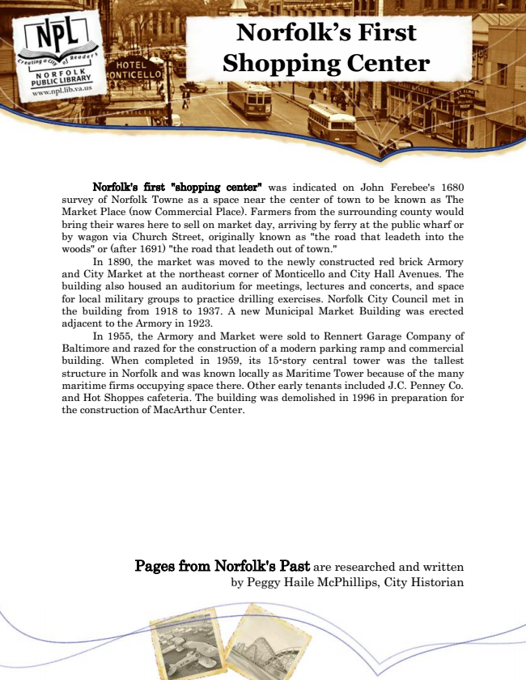

Norfolk’s First Shopping Center
Norfolk's first "shopping center" was indicated on John Ferebee's 1680 survey of Norfolk Towne as a space near the center of town to be known as The Market Place (now Commercial Place). Farmers from the surrounding county would bring their wares here to sell on market day, arriving by ferry at the public wharf or by wagon via Church Street, originally known as "the road that leadeth into the woods" or (after 1691) "the road that leadeth out of town."
In 1890, the market was moved to the newly constructed red brick Armory and City Market at the northeast corner of Monticello and City Hall Avenues. The building also housed an auditorium for meetings, lectures and concerts, and space for local military groups to practice drilling exercises. Norfolk City Council met in the building from 1918 to 1937. A new Municipal Market Building was erected adjacent to the Armory in 1923.
In 1955, the Armory and Market were sold to Rennert Garage Company of Baltimore and razed for the construction of a modern parking ramp and commercial building. When completed in 1959, its 15-story central tower was the tallest structure in Norfolk and was known locally as Maritime Tower because of the many maritime firms occupying space there. Other early tenants included J.C. Penney Co. and Hot Shoppes cafeteria. The building was demolished in 1996 in preparation for the construction of MacArthur Center.
Pages from Norfolk's Past are researched and written by Peggy Haile McPhillips, City Historian